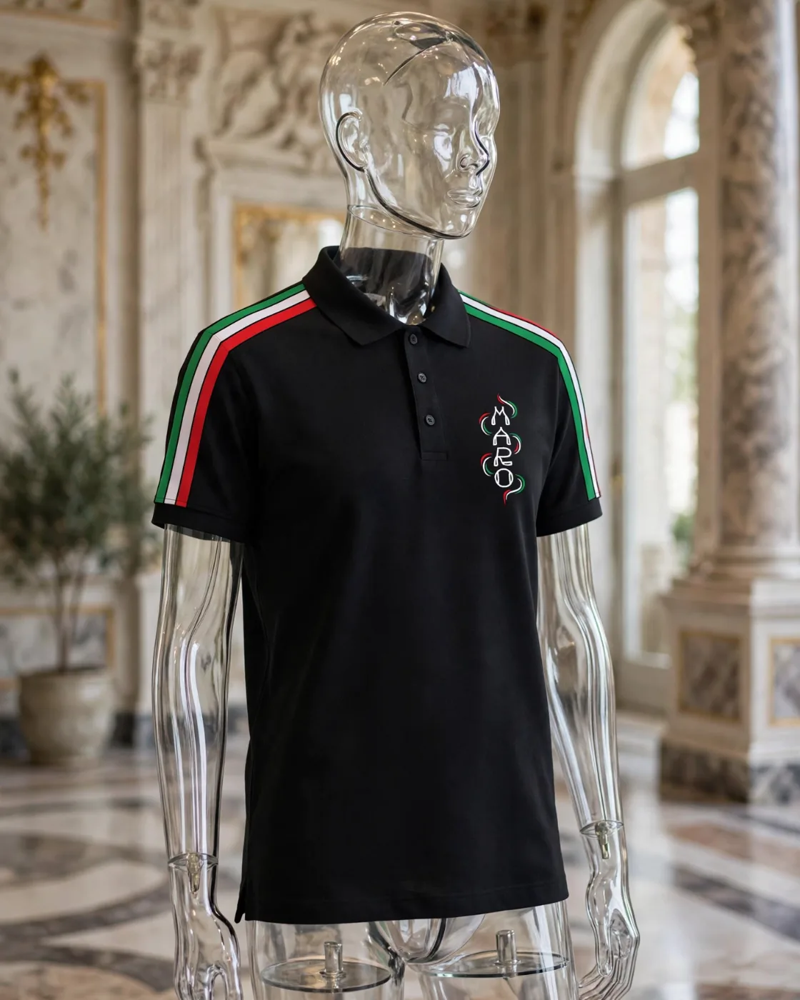
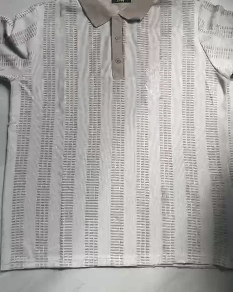
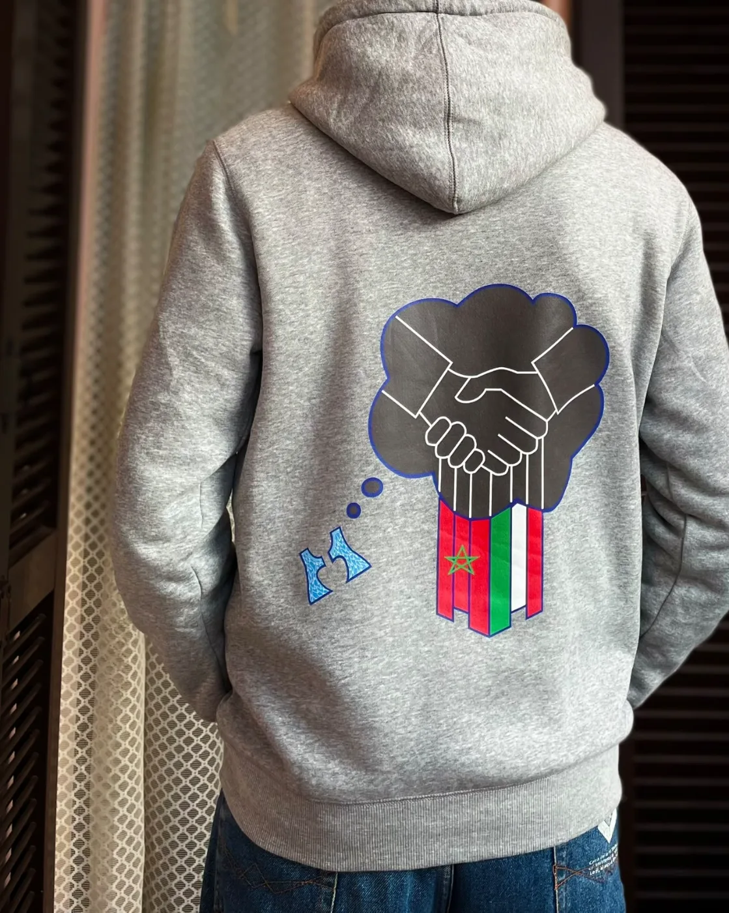
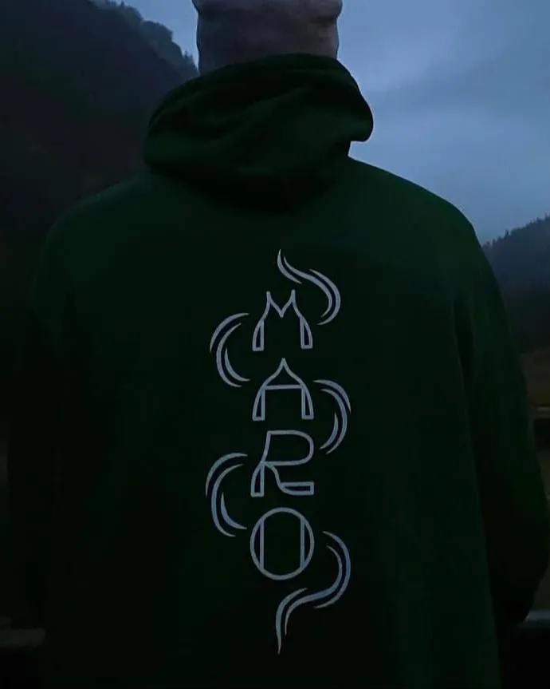
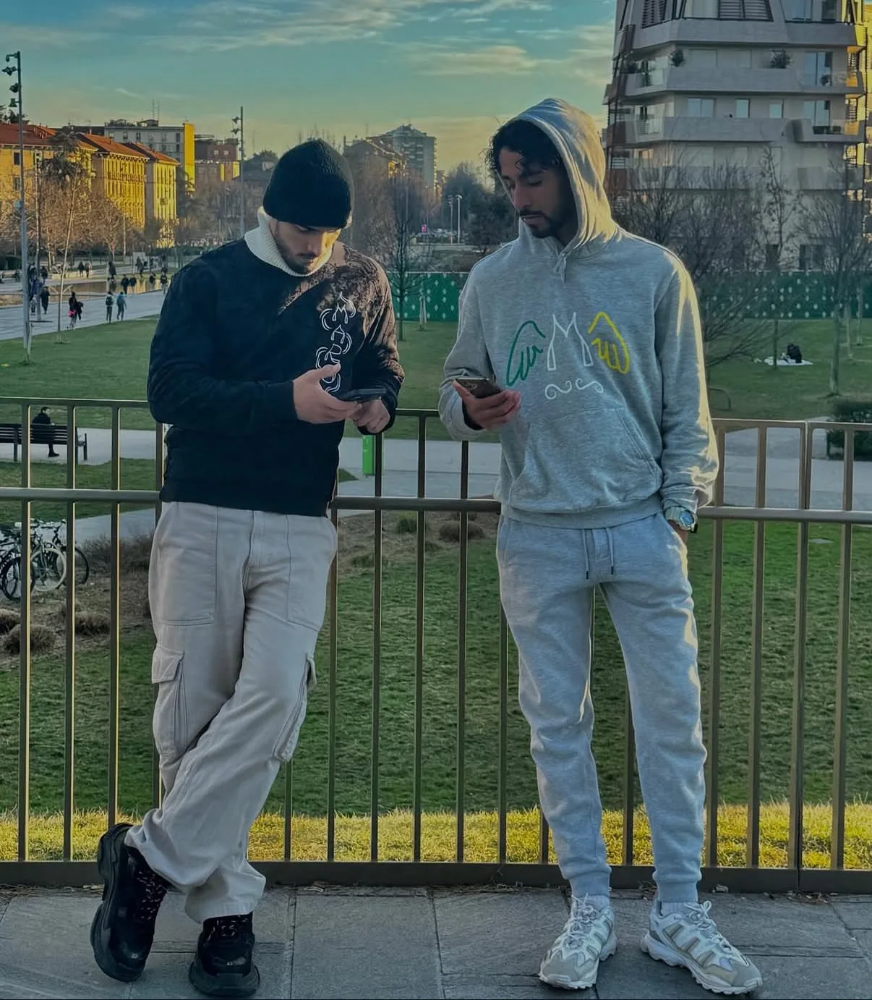
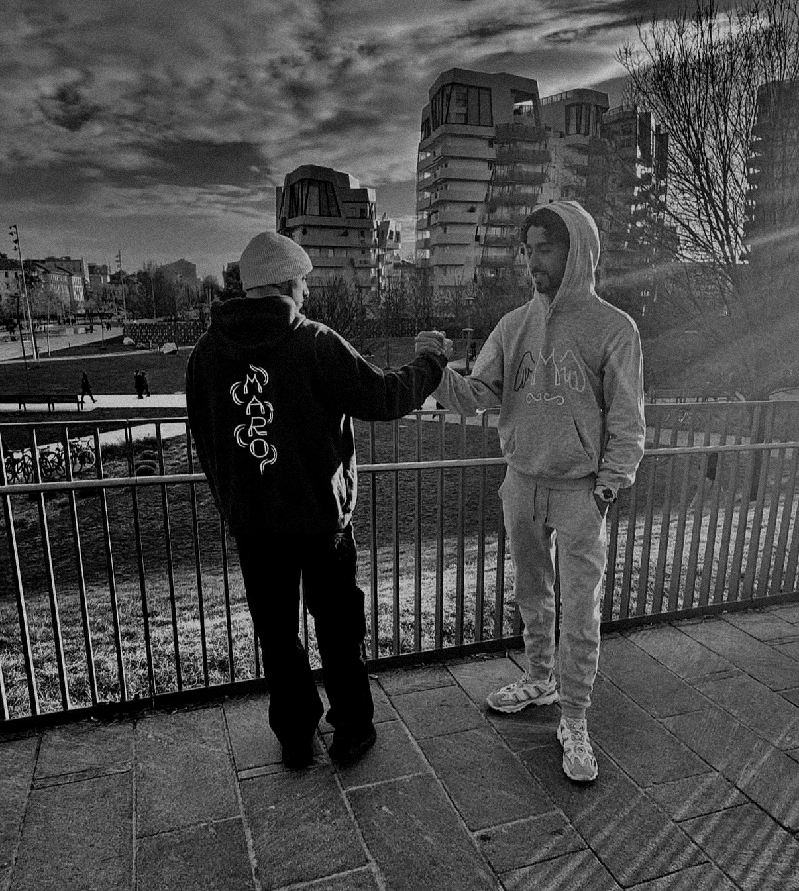

Abbigliamento streetwear · Milano
Fly with
your mind
Polo e felpe disegnate a Milano. Il Drop 001 è online.
Drop 001

Polo Linee
Nero, righe bianche sulle maniche
75,00 €

Polo Tricolore
Nero, maniche verde bianco rosso
80,00 €

Polo Jacquard
Grigio perla, collo tortora
95,00 €

Felpa Stretta di mano
Grigio melange, stampa sul retro
120,00 €

Felpa Firma
Blu notte, firma MARO sul retro
130,00 €

Felpa Nera
Nero, firma MARO sul retro
110,00 €

Piedi
a Milano.
Testa
altrove.
Due terre,
un volo
MARO nasce a Milano, da chi è cresciuto tra due culture: l’Italia e il Marocco. La stretta di mano è il primo disegno del marchio: due terre che si tengono.
Le ali vengono da uno schizzo a penna. L’idea è rimasta quella: vola con la testa, anche quando i piedi sono in metro alle otto del mattino.
